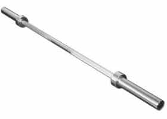
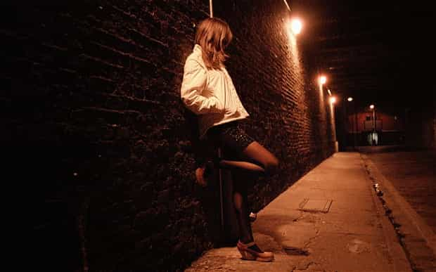
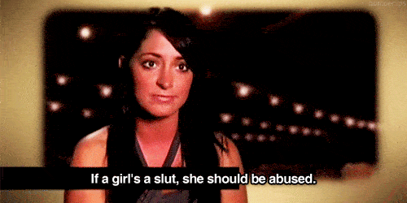

< < < Back
I Hate Men Dot Org – Return Of Kings
Not too long ago I started a Google search for Panzer tanks of World War 2. After an hour I had completely forgotten why I was looking up sexy tanks of the Wehrmacht because I had inadvertently wound up on the incredibly unsexy site I Hate Men. Initially-due to its ugly look and clumsy design-I thought the site was just another abandonware blog. Yet it still seems to be functioning with a small but active user base.
The banner head proudly declares that I Hate Men is the ‘World’s Largest Women Driven Social Media Website’. I think Pinterest, Facebook and practically every other social media website in existence might have a legitimate argument against that claim but if there’s one thing I Hate Men dot org has in abundance it is overestimation of self worth and lack of rational thought. Remind you of any particular group?
“Not worshipping me is pARt of pAAAtriARchy”
The quality of the site is low. The majority of the ‘articles’ are mostly rambling one to four paragraph walls of text rife with improper punctuation and misspelled words submitted by ranting women frustrated with men. The majority of their accusations and hatred have little basis in the real world and it was readily apparent after only ten minutes of reading that the women on the site consist of spoiled, angry and aging sluts. However, the direct access into the minds of sluts is absolutely fascinating and also very informative, especially for those of you who plan on or just beginning to game said sluts. Although a lot of the site can be painful to your sanity, I recommend any budding playah to read through some ‘articles’ and study the inner workings of the mind of your promiscuous counterparts.
I would like to avoid giving the site the traffic since it’ll undoubtedly boost the ego of the creator but there are too many lols to be had and too much practical wisdom to be gleaned from examining the unadulterated thought processes of cheap women. In the end it is impossible to resist sharing when you have crap thoughtful, heartfelt confessions like this:
Why I hate men: by Tanya
“I hate men because they’re shallow. They’ll always turn to stare at a beautiful woman, even when you’re right there beside them looking your best. Do men think we should just sit there and endure it with a smile plastered on our face? Women don’t carry on like that. You don’t see us craning our necks to gawk at a hot guy right infront of our boyfriend.”
Billy’s Slut Translator: The alpha I’m banging is taking me out for some post “yay you let me finish on your face” pancakes. Having cheaply given my poosy up for him because he’s super cute, Mr. Alpha is now scoping out his next lay instead of staring directly at me the whole time – oh hey look at that guy’s cute butt.
“Anyway… I guess I’m feeling a little frustrated right now.”
Billy’s Slut Translator: After the pancakes Mr. Alpha had me drop him off and he’s not replying to my texts.
She has so many serious problems
“I am not the type of girl who will go out and sleep with any random guy. To be honest I’m sexually frustrated but I can’t seem to find a guy I like enough to become intimate with. I’ve tried internet dating websites.. It’s like the guys in my town are all taken, gay or just plain creepy.”
Billy’s Slut Translator: Despite all evidence to the contrary, I’m totally not a whore. I’ve never, ever, have sex with a guy within five minutes of meeting him. I always make sure I know their names first. For some reason they never want to wife me up afterwards and now I have to search for dick my prince on an international level with the internet. Every guy I find attractive enough to date doesn’t wanna date me; they’re probably intimidated. I mean, there’s tons of single guys available but they’re nowhere near as cute as the guys I deserve. Or they’re already out dating those real sluts. Gawd.
“I just want to find my kind of guy, I want to have fun and open up to him have that feeling you only have when you’re with your favourite person in the world.”
Billy’s Slut Translator: I want to find a guy who’s super hot and will bend over backward to worship me. A guy who doesn’t care that yeah, most of the time it really is all about me. I mean, if I’m happy then he’ll totally be happy just being in my awesome presence. Then I can tell him every single inane thought and opinion I have and he’ll totally be my favourite person in the world.
I want to say that Tanya’s little rant is more sad then funny, that it’s a tragic Banshee’s wail from a woman who is on the cusp of realizing her selfishness has a price and that the bills are starting to come in but the lack of self awareness and near clichéd level of narcissistic slut speak and rationalization really does blow away any sense of pity for her. Many of today’s women are genuinely out of touch with the world beyond themselves. They are simply incapable of seeing their inherent faults or of stepping out from behind their own conceit. Here are some more examples to show the bizarre thought processes behind the minds of today’s sluts:
(Except) I hate men!: by Separated4Ever111
“3. I hate men b/c they are physically stronger than us. F**k**g bullsh*t! So, this last one is really just an annoyance that I have since I hate men and I don’t want to have to need their help when I’m not strong enough to do something. Urrgh!”

The number one obstacle to women’s independence apparently
Sepafor (a heroic single mother) deeply desires to be independent, but all those 20kg Olympic bars lying around her house are really putting a strain on her feminism. Never mind everything else wrong in today’s war of the sexes; Sepafor hits the nail on the head – men being physically stronger then women is totally unfair and unarguably the number one issue we as a society must figure out ASAP.
I HATE ALL MEN!! THEY ALL SUCK BALLS, LITERALLY: by manhater26
“Ok first off, I’m only 19 years old and I already hate men. They’re SUCH fucked up creatures. I’m glad I realized this early on in life because I’ll be saving myself a great deal of suffering in the future. The freedom that comes with not caring what men think about you is unspeakable. I used to try hard to look good for men; well, not anymore. FUCK IT. Older men are the WORST, they like to manipulate young girls such as myself because they know we’re naive/don’t know much about life. But hey, you live and you learn and I’ve definitely learned my lesson. I’m doneski. I don’t want to get married and I don’t want to have kids. I’m SOOOOO done.”
Here manhater26 (who claims to be only 19, manhater19 was taken apparently) declares how she’s NOOOOOW going to ACT how the millions of other sluts infecting/living western society already DO. I truly hope she ENJOYS her freedom but I have a sneaking suspicion that I Hate Men hasn’t seen the last of herski.

Pictured: the new and improved manhater26
I don’t just want to criticize though. I realize that Return Of Kings has a few silent hoebags reading it and their feelings probably just got hurt. We don’t want to become a hate site ourselves now. So hold off on rushing to comments section to deride me ladies. I don’t want to leave a sour taste in your mouths amongst the thick gooey saltiness that is already encrusted in there, so I’m going to pull out my inner Dr. Phil and guide you chicks out there through a final article where I offer some sage wisdom on how not to be the stupid sluts you probably are. You’re welcome.
hate: by monykah
“I hate men. I hate the games that have to be played with them.I hate the fact that they want women so bad sexually, if you have sex with them too quickly, they leave. It hurts so bad. I hate to think of how many men I have had sex with (only because I desire intimacy/closeness) and KNOW that I meant nothing to them (and vice versa). I’ve only had 2 real boyfriends, but several partners.”
Monica – sorry, monykah – and all you other women like her, here’s a little PROTIP on love; seeking intimacy/closeness with ‘partners’ (guys you screw without dating) via sex is retarded. Stop being retarded and stop having random sex if you want love. Sex does not lead to intimacy if you’re not committed to the person. If you’re looking for love, sex should be the culmination of a relationship, not something that happens after six Smirnoff mixers and three Jello shots. If a man is pressuring you for quick sex he’s undoubtedly looking for a pump and dump. If you give it up, it is no one’s fault but your own.
“I hate the way men try to give you the bare minimum, but will take everything if you allow them to. The other day I was texting with a guy that likes me and I told him that I had gotten laid off of my job. He then says, “oh, you’re at home?” After I tell him yes, he proceeds to ask me if he can come over and watch tv with me. Call me crazy, but that made me so so angry! He has never ever invited me out to dinner, lunch, a movie, bowling, or any other type of date, but he wants to come over my house, kick off his shoes, watch my cable on my tv, sitting on my couch, in my house, where I don’t even know how I’m going to pay rent at this month. If there is one thing I know about men (especially those that will invite themselves over to your place of residence, or you to theirs) they want to try to establish some false sense of intimacy with you, put their arm around you, touch your leg, try to kiss you, eventually hoping it will lead to sex. All without them ever having to spend a dime on a damn date.”
You Moneykuh’s out there, welcome to equality. Men don’t have to spend a dime on you just because you don’t have a job. If you want men to spend money on you, you have to be a woman worthy of spending it on. A lot of men work hard jobs and they have to earn their cash. If you want to date stop giving your body up for next to nothing. If you want a man to spend money on you then give him a reason to. You are only worth what you are worth. Men don’t owe you anything even if you’ve banged them; if you want cash for sex, become a prostitute.

If you only want sex and money you may as well hook – I still would if I could find a kind pimp
Brief aside: I can’t wait until someone makes an article saying that Return Of Kings tells women to become prostitutes and quotes only the last half of that sentence.
“I hate men who approach me who are way out of their league. And I get so frustrated with myself for being so damn polite to them, and not wanting to hurt their feelings. I hate how I have to pretend not to like the guys that I’m really interested in, knowing that if I pretend that I couldn’t care less about them, they will chase me to the ends of the earth. But if I am genuine and authentic, and show that I like them, they really aren’t interested. It’s the most unnatural thing in the world to pretend as if you don’t like someone when you actually do.”
Munnekaa’s, here’s a crazy crazy thought – bear with me – but if you’re not employed, if you’re deceptive and you’ve slept around with a lot of guys, there are very few men who are legitimately below your league. You are not good girlfriend material for most men out there and you certainly aren’t worthy of being a wife to any good man. An investment in you in either forms of love or finances is a terrible prospect for men. You’re a loser and the first step to fixing that is to admit you are the problem, not the men you thoughtlessly bang.
All your problems stem from your selfishness and sense of entitlement. Lose these and try to salvage the remains of your life, the one you alone are screwing up. And don’t be surprised when you play hard to get and nobody gets you. Most people have better things to do then to chase someone around who shows no sign of interest. Women of the west, find some middle ground between immediately giving your herpes to a guy you just met and completely ignoring him like he’s an unworthy smudge of crap on your heel. Stop being so extreme and if you genuinely like a guy let him know. There are only three possible outcomes to doing so;
1) He’ll want sex immediately, meaning he’s going to pump and dump you – proceed knowing that he won’t date you.
2) He’ll beta it up and he’ll ask you out on a date. If you accept that the date is not your inherent right, you’ll treat him with the same respect and dignity you demand for yourself. Respect it when a man spends time and money on you without pushing immediately for sex.
3) He’s not interested and will tell you so or simply just ignore you. You may be tempted to bribe him with sex, and he might take you up on that offer, but he’s not going to date you afterward so just forget about it and move the frig on.
“For every man that I have ever had sex with, I hate you. I hate you for making me feel worthless in your eyes, when I was simply trying to share a part of myself with you. I hate you for making me doubt myself. I hate you for making me have such a negative outlook on men. I hate you for making me cry. I hate you for not even making the sex worth my time.”
Moonicuz’s of the world, it is you and you alone making terrible choices in regards to men. You all are not some tragic heroine, spurred and used by the cruel vagaries of men. If you act like a cheap worthless slut, then that is exactly how men are going to treat you. All those tears you cry over us, all those angry feelings, they are not our fault – they are yours. Sex does not magically equal intimacy if there was nothing there beforehand. If all you want is sex sex sex then how are you surprised when that’s all you get? Stop trying to make other people feel guilty for you. You’re playing a game of Sexual Chicken with men and in Sexual Chicken the man always wins, especially if you don’t swerve your poon outta the way (of his penis). For women the only way to win the game is not to play it.

Hey, I’m not the one saying it; a woman is
In a better world the butt-hurt sluts on I Hate Men would represent just a sub-sect of the Western woman; that they were nothing more then a small, pathetic repository of greedy hoebags who lack an ounce of logic or empathy. I wish we men didn’t encounter women like this every day, all day, in our jobs or on the street, while out shopping or at the gym. Yet we do. The rants expressed on I Hate Men are the zeitgeist of today’s Western female. They are everywhere, it’s like we live in a world of slutty Bodysnatchers. Hopefully this little bit of insight into the female mind helps improves your lives men; or at the very least helps lead to an extra notch or two in some roundabout way.
And to all the women reading this, do you want to be a decent human being? The method is simple; do not act or even think like any of the chicks on I Hate Men. If you already do change your ways quick before you wind up getting slammed by us alpha jerks next weekend and then fill the internet up with more jaded crap about how men are evil monsters. We don’t have to save you from yourselves. The majority of men are not assholes; they’re simply treating you how you deserve to be treated. Give yourselves a reason not to hate men because you alone are the only one with the power to find it.
Or, like always, just ignore my good advice and keep on skankin’ it up. It’s not my heartache.
Read More: Why Americans Hate The Oldest Profession


{kind=link}
{kind=link}
{kind=link}
{kind=link}
{kind=link}